[1]:
from biodoe_tools.simulation import Test4
[2]:
from typing import List
import matplotlib.pyplot as plt
import numpy as np
import pandas as pd
from biodoe_tools.preferences import kwarg_savefig, kwarg_save_transparent_fig
[3]:
from itertools import product
[4]:
edges = np.array(list(map(list, product([-1, 0, 1], repeat=10))))
[5]:
from biodoe_tools.design import CLOO
[6]:
# models = [Prototype(v, model_id=i) for i, v in enumerate(edges)]
models = [Test4(v, model_id=i) for i, v in enumerate(edges)]
[7]:
fig, ax = plt.subplots(figsize=(4, 3))
model = Test4(edges[-1], model_id="")
model.plot(ax)
datdot = pd.DataFrame({
"h": [2, 4, 6, 8],
"v": [9, 7, 5, 3]
})
b_pos = {
12: (datdot.h[0:2].mean(), datdot.v[0:2].mean()),
13: (datdot.h[2], datdot.v[1]),
14: (datdot.h[3], datdot.v[2]),
23: (datdot.h[1:3].mean(), datdot.v[1:3].mean()),
24: (datdot.h[1:3].mean(), datdot.v[2:4].mean()),
34: (datdot.h[2:4].mean(), datdot.v[2:4].mean()),
}
for i in [1, 2, 3, 4]:
ax.text(
datdot.h[i - 1], 2,
r"$a_{" + str(i) + "}$",
ha="center", va="center", size=10
)
for k, b in b_pos.items():
ax.text(
*b_pos[k], r"$b_{" + str(k) + "}$",
ha="center", va="center", size=10
)
ax.set(title=model.name)
fig.savefig(f"/home/jovyan/out/test4_models.pdf", **kwarg_savefig)
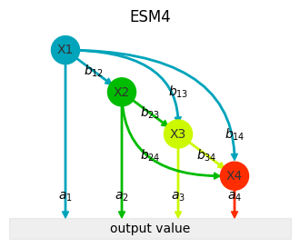
[8]:
ap = lambda c: dict(
shrink=0, width=1, headwidth=5,
headlength=5, connectionstyle="arc3",
facecolor=c, edgecolor=c,
)
ap2 = lambda c: dict(
arrowstyle="|-|", connectionstyle="arc3",
facecolor=c, edgecolor=c,
linewidth=2, mutation_scale=4,
)
angleA = lambda n: [0, -90, 0, -45][n - 1]
angleB = lambda n: [90, 180, 105, 120][n - 1]
app = lambda n, c: dict(
shrink=0, width=1, headwidth=5,
headlength=5,
connectionstyle=f"angle3, angleA={angleA(n)}, angleB={angleB(n)}",
facecolor=c, edgecolor=c,
)
apn = lambda n, c: dict(
arrowstyle="|-|", connectionstyle=f"angle3, angleA={angleA(n)}, angleB={angleB(n)}",
facecolor=c, edgecolor=c,
linewidth=2, mutation_scale=4,
)
arrconf=dict(ha="center", va="center", zorder=-10)
edge_pos = {
12: ([datdot.h[1] - .5 / np.sqrt(2), datdot.v[1] + .5 / np.sqrt(2)], [datdot.h[0], datdot.v[0]]),
13: ([datdot.h[2], datdot.v[2] + .5], [datdot.h[0], datdot.v[0]]),
14: ([datdot.h[3], datdot.v[3] + .75], [datdot.h[0], datdot.v[0]]),
23: ([datdot.h[2] - .5 / np.sqrt(2), datdot.v[2] + .5 / np.sqrt(2)], [datdot.h[1], datdot.v[1]]),
24: ([datdot.h[3] - .5, datdot.v[3]], [datdot.h[1], datdot.v[1]]),
34: ([datdot.h[3] - .5 / np.sqrt(2), datdot.v[3] + .5 / np.sqrt(2)], [datdot.h[2], datdot.v[2]]),
}
[9]:
datdot = pd.DataFrame({
"h": [2, 4, 6, 8],
"v": [9, 7, 5, 3],
"c": ["r", "r", ".9", "r"]
})
b_pos = {
12: (datdot.h[0:2].mean(), datdot.v[0:2].mean()),
13: ((datdot.h[2] + datdot.h[1:3].mean()) / 2, (datdot.v[1] + datdot.v[1:3].mean()) / 2),
14: (datdot.h[3], datdot.v[2]),
}
a_aps = {
2: ap("r"),
4: ap2("r")
}
b_aps = {
12: ap("r"),
13: app(1, ".9"),
14: apn(1, "r"),
23: ap2(".9"),
}
[10]:
fig, ax = plt.subplots(figsize=(5, 4))
ax.scatter(data=datdot, x="h", y="v", s=500, c="c")
ax.annotate("", [datdot.h[2 - 1], 1], [datdot.h[2 - 1], datdot.v[2 - 1]], arrowprops=a_aps[2], **arrconf)
ax.annotate("", [datdot.h[4 - 1], 1], [datdot.h[4 - 1], datdot.v[4 - 1]], arrowprops=a_aps[4], **arrconf)
ax.text(datdot.h[2 - 1], 2, "pathway", ha="center", va="center", size=10)
ax.text(datdot.h[4 - 1], 2, "pathway", ha="center", va="center", size=10)
ax.annotate("", *edge_pos[12], arrowprops=b_aps[12], **arrconf)
ax.annotate("", *edge_pos[13], arrowprops=b_aps[13], **arrconf)
ax.annotate("", *edge_pos[14], arrowprops=b_aps[14], **arrconf)
ax.annotate("", *edge_pos[23], arrowprops=b_aps[23], **arrconf)
ax.text(*b_pos[12], "effective\nregulation", ha="center", va="center", size=8)
ax.text(*b_pos[13], "ineffective\nregulations", ha="center", va="top", size=8)
ax.text(*b_pos[14], "effective\nregulation", ha="center", va="center", size=8)
ax.fill_between([0, 10], [0, 0], [1, 1], color=".7", alpha=.2)
ax.text(5, .5, "output value", ha="center", va="center")
ax.set_ylim([0, 10])
ax.set_xlim([0, 10])
ax.axis("off")
ax.set_title("pathways & effective/ineffective regulations")
fig.savefig(f"/home/jovyan/out/feat_path_reg.pdf", **kwarg_savefig)
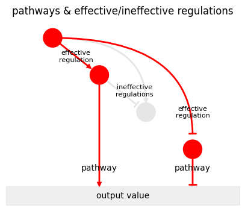
[11]:
datdot = pd.DataFrame({
"h": [2, 4, 6, 8],
"v": [9, 7, 5, 3],
"c": [".9", ".9", ".9", ".9"]
})
b_pos = {
12: (datdot.h[0:2].mean(), datdot.v[0:2].mean()),
13: (datdot.h[2], datdot.v[1]),
14: (datdot.h[3], datdot.v[2]),
23: (datdot.h[1:3].mean(), datdot.v[1:3].mean()),
24: (datdot.h[1:3].mean(), datdot.v[2:4].mean()),
34: (datdot.h[2:4].mean(), datdot.v[2:4].mean()),
}
a_aps = {
1: ap(".9"),
2: ap(".9"),
3: ap2(".9"),
4: ap2(".9")
}
b_aps = {
12: ap(".9"),
13: app(1, ".9"),
14: apn(1, ".9"),
23: ap2(".9"),
24: app(2, ".9"),
}
[12]:
fig, ax = plt.subplots(figsize=(5, 4))
ax.scatter(data=datdot, x="h", y="v", s=500, c="c")
ax.annotate("", [datdot.h[1 - 1], 1], [datdot.h[1 - 1], datdot.v[1 - 1]], arrowprops=a_aps[1], **arrconf)
ax.annotate("", [datdot.h[3 - 1], 1], [datdot.h[3 - 1], datdot.v[3 - 1]], arrowprops=a_aps[3], **arrconf)
ax.annotate("", [datdot.h[4 - 1], 1], [datdot.h[4 - 1], datdot.v[4 - 1]], arrowprops=a_aps[4], **arrconf)
ax.text(datdot.h[1 - 1], datdot.v[1 - 1], "0", ha="center", va="center", size=10, c="C0")
ax.text(datdot.h[2 - 1], datdot.v[2 - 1], "1", ha="center", va="center", size=10, c="C1")
ax.text(datdot.h[3 - 1], datdot.v[3 - 1], "2", ha="center", va="center", size=10, c="C2")
ax.text(datdot.h[4 - 1], datdot.v[4 - 1], "3", ha="center", va="center", size=10, c="C4")
ax.text(datdot.h[1 - 1] -.3, 2, "0", ha="center", va="center", size=10, c="C0")
ax.text(datdot.h[2 - 1], 2, "0", ha="center", va="center", size=10, c="C1")
ax.text(datdot.h[3 - 1] -.3, 2, "2", ha="center", va="center", size=10, c="C2")
ax.text(datdot.h[4 - 1] -.3, 2, "3", ha="center", va="center", size=10, c="C4")
ax.annotate("", *edge_pos[12], arrowprops=b_aps[12], **arrconf)
ax.annotate("", *edge_pos[14], arrowprops=b_aps[14], **arrconf)
ax.annotate("", *edge_pos[23], arrowprops=b_aps[23], **arrconf)
ax.annotate("", *edge_pos[24], arrowprops=b_aps[24], **arrconf)
ax.text(*(np.array(b_pos[12])+np.array([-.5, .5])), "#1", ha="center", va="center", size=10, c="C1")
ax.text(*(np.array(b_pos[12])+np.array([-0, 0])), "#1", ha="center", va="center", size=10, c="C2")
ax.text(*(np.array(b_pos[12])+np.array([.5, -.5])), "#1", ha="center", va="center", size=10, c="C4")
ax.text(*b_pos[14], "#3", ha="center", va="center", size=10, c="C4")
ax.text(*b_pos[23], "#2", ha="center", va="center", size=10, c="C2")
ax.text(*b_pos[24], "#2", ha="center", va="center", size=10, c="C4")
ax.fill_between([0, 10], [0, 0], [1, 1], color=".7", alpha=.2)
ax.text(5, .5, "output value", ha="center", va="center")
ax.set_ylim([0, 10])
ax.set_xlim([0, 10])
ax.axis("off")
ax.set_title("regulation weight (RW)")
fig.savefig(f"/home/jovyan/out/feat_reg_weight.pdf", **kwarg_savefig)
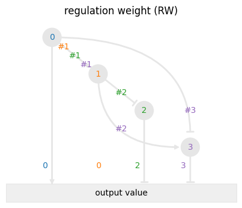
[13]:
datdot = pd.DataFrame({
"h": [2, 4, 6, 8],
"v": [9, 7, 5, 3],
"c": ["r", "r", ".9", "r"]
})
b_pos = {
12: (datdot.h[0:2].mean(), datdot.v[0:2].mean()),
13: (datdot.h[2], datdot.v[1]),
14: (datdot.h[3], datdot.v[2]),
23: (datdot.h[1:3].mean(), datdot.v[1:3].mean()),
24: (datdot.h[1:3].mean(), datdot.v[2:4].mean()),
34: (datdot.h[2:4].mean(), datdot.v[2:4].mean()),
}
a_aps = {
1: ap(".9"),
2: ap(".9"),
3: ap2(".9"),
4: ap2("r")
}
b_aps = {
12: ap(".9"),
13: app(1, ".9"),
14: apn(1, "r"),
23: ap2(".9"),
24: app(2, "r"),
}
[14]:
fig, ax = plt.subplots(figsize=(5, 4))
ax.scatter(data=datdot, x="h", y="v", s=500, c="c")
ax.annotate("", [datdot.h[1 - 1], 1], [datdot.h[1 - 1], datdot.v[1 - 1]], arrowprops=a_aps[1], **arrconf)
ax.annotate("", [datdot.h[3 - 1], 1], [datdot.h[3 - 1], datdot.v[3 - 1]], arrowprops=a_aps[3], **arrconf)
ax.annotate("", [datdot.h[4 - 1], 1], [datdot.h[4 - 1], datdot.v[4 - 1]], arrowprops=a_aps[4], **arrconf)
ax.text(datdot.h[1 - 1], datdot.v[1 - 1], "#1", ha="center", va="center", size=10)
ax.text(datdot.h[2 - 1], datdot.v[2 - 1], "#2", ha="center", va="center", size=10)
ax.text(datdot.h[3 - 1], datdot.v[3 - 1], "", ha="center", va="center", size=10)
ax.text(datdot.h[4 - 1], datdot.v[4 - 1], "#3", ha="center", va="center", size=10)
ax.text(datdot.h[1 - 1] -.3, 2, "1", ha="center", va="center", size=10)
ax.text(datdot.h[2 - 1], 2, "0", ha="center", va="center", size=10)
ax.text(datdot.h[3 - 1] -.3, 2, "2", ha="center", va="center", size=10)
ax.text(datdot.h[4 - 1] -.3, 2, "3", ha="center", va="center", size=10, c="r")
ax.annotate("", *edge_pos[12], arrowprops=b_aps[12], **arrconf)
ax.annotate("", *edge_pos[13], arrowprops=b_aps[13], **arrconf)
ax.annotate("", *edge_pos[14], arrowprops=b_aps[14], **arrconf)
ax.annotate("", *edge_pos[24], arrowprops=b_aps[24], **arrconf)
ax.text(*b_pos[12], "", ha="center", va="center", size=10)
ax.text(*b_pos[13], "", ha="center", va="center", size=10)
ax.text(*b_pos[14], "", ha="center", va="center", size=10)
ax.text(*b_pos[24], "", ha="center", va="center", size=10)
ax.fill_between([0, 10], [0, 0], [1, 1], color=".7", alpha=.2)
ax.text(5, .5, "output value", ha="center", va="center")
ax.set_ylim([0, 10])
ax.set_xlim([0, 10])
ax.axis("off")
ax.set_title("factor weight (FW)")
fig.savefig(f"/home/jovyan/out/feat_factor_weight.pdf", **kwarg_savefig)
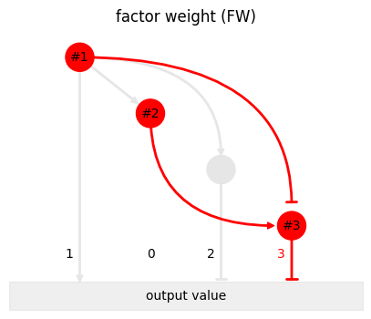
[15]:
datdot = pd.DataFrame({
"h": [2, 4, 6, 8],
"v": [9, 7, 5, 3],
"c": [".9", ".9", ".9", ".9"]
})
b_pos = {
12: (datdot.h[0:2].mean(), datdot.v[0:2].mean()),
13: (datdot.h[2], datdot.v[1]),
14: (datdot.h[3], datdot.v[2]),
23: (datdot.h[1:3].mean(), datdot.v[1:3].mean()),
24: (datdot.h[1:3].mean(), datdot.v[2:4].mean()),
34: (datdot.h[2:4].mean(), datdot.v[2:4].mean()),
}
a_aps = {
1: ap("C0"),
2: ap(".9"),
3: ap("C1"),
4: ap2("C2")
}
b_aps = {
12: ap("C2"),
13: app(1, "C1"),
14: apn(1, "C4"),
23: ap2(".9"),
24: app(2, "C2"),
}
[16]:
fig, ax = plt.subplots(figsize=(5, 4))
ax.scatter(data=datdot, x="h", y="v", s=500, c="c")
ax.annotate("", [datdot.h[1 - 1], 1], [datdot.h[1 - 1], datdot.v[1 - 1]], arrowprops=a_aps[1], **arrconf)
ax.annotate("", [datdot.h[3 - 1], 1], [datdot.h[3 - 1], datdot.v[3 - 1]], arrowprops=a_aps[3], **arrconf)
ax.annotate("", [datdot.h[4 - 1], 1], [datdot.h[4 - 1], datdot.v[4 - 1]], arrowprops=a_aps[4], **arrconf)
ax.text(datdot.h[1 - 1], datdot.v[1 - 1], "", ha="center", va="center", size=10)
ax.text(datdot.h[2 - 1], datdot.v[2 - 1], "", ha="center", va="center", size=10)
ax.text(datdot.h[3 - 1], datdot.v[3 - 1], "", ha="center", va="center", size=10)
ax.text(datdot.h[4 - 1], datdot.v[4 - 1], "", ha="center", va="center", size=10)
ax.text(datdot.h[1 - 1] -.3, 2, "1", ha="center", va="center", size=10, c="C0")
ax.text(datdot.h[2 - 1], 2, "0", ha="center", va="center", size=10)
ax.text(datdot.h[3 - 1] -.3, 2, "2", ha="center", va="center", size=10, c="C1")
ax.text(datdot.h[4 - 1] -.3, 2, "3", ha="center", va="center", size=10, c="C2")
ax.text(datdot.h[4 - 1] +.3, 2, "2", ha="center", va="center", size=10, c="C4")
ax.annotate("", *edge_pos[12], arrowprops=b_aps[12], **arrconf)
ax.annotate("", *edge_pos[13], arrowprops=b_aps[13], **arrconf)
ax.annotate("", *edge_pos[14], arrowprops=b_aps[14], **arrconf)
ax.annotate("", *edge_pos[24], arrowprops=b_aps[24], **arrconf)
ax.text(*b_pos[12], "", ha="center", va="center", size=10)
ax.text(*b_pos[13], "", ha="center", va="center", size=10)
ax.text(*b_pos[14], "", ha="center", va="center", size=10)
ax.text(*b_pos[24], "", ha="center", va="center", size=8)
ax.fill_between([0, 10], [0, 0], [1, 1], color=".7", alpha=.2)
ax.text(5, .5, "output value", ha="center", va="center")
ax.set_ylim([0, 10])
ax.set_xlim([0, 10])
ax.axis("off")
ax.set_title("cascade length (CL)")
fig.savefig(f"/home/jovyan/out/feat_cascade_length.pdf", **kwarg_savefig)
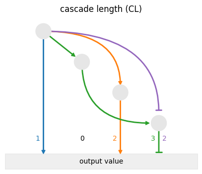
[17]:
datdot = pd.DataFrame({
"h": [2, 4, 6, 8],
"v": [9, 7, 5, 3],
"c": ["r", "r", "r", "r"]
})
b_pos = {
12: (datdot.h[0:2].mean(), datdot.v[0:2].mean()),
13: (datdot.h[2], datdot.v[1]),
14: (datdot.h[3], datdot.v[2]),
23: (datdot.h[1:3].mean(), datdot.v[1:3].mean()),
24: (datdot.h[1:3].mean(), datdot.v[2:4].mean()),
34: (datdot.h[2:4].mean(), datdot.v[2:4].mean()),
}
a_aps = {
1: ap("C0"),
2: ap(".9"),
3: ap("C1"),
4: ap2(".9")
}
b_aps = {
12: ap("C2"),
13: app(1, "C1"),
14: apn(1, "C0"),
23: ap2(".9"),
24: app(2, "C1"),
34: ap("C2"),
}
[18]:
fig, ax = plt.subplots(figsize=(5, 4))
ax.scatter(data=datdot, x="h", y="v", s=500, c="c")
ax.annotate("", [datdot.h[4 - 1], 1], [datdot.h[4 - 1], datdot.v[4 - 1]], arrowprops=a_aps[4], **arrconf)
ax.text(datdot.h[1 - 1], datdot.v[1 - 1], "#1", ha="center", va="center", size=10)
ax.text(datdot.h[2 - 1], datdot.v[2 - 1], "#2", ha="center", va="center", size=10)
ax.text(datdot.h[3 - 1], datdot.v[3 - 1], "#3", ha="center", va="center", size=10)
ax.text(datdot.h[4 - 1], datdot.v[4 - 1], "#4", ha="center", va="center", size=10)
# ax.text(datdot.h[1 - 1] -.3, 2, "1", ha="center", va="center", size=10, c="C0")
# ax.text(datdot.h[2 - 1], 2, "0", ha="center", va="center", size=10)
# ax.text(datdot.h[3 - 1] -.3, 2, "2", ha="center", va="center", size=10, c="C1")
# ax.text(datdot.h[4 - 1] -.3, 2, "3", ha="center", va="center", size=10, c="C2")
# ax.text(datdot.h[4 - 1] +.3, 2, "2", ha="center", va="center", size=10, c="C4")
ax.annotate("", *edge_pos[14], arrowprops=b_aps[14], **arrconf)
ax.annotate("", *edge_pos[24], arrowprops=b_aps[24], **arrconf)
ax.annotate("", *edge_pos[34], arrowprops=b_aps[34], **arrconf)
ax.text(*b_pos[14], "#1", ha="left", va="center", size=10)
ax.text(*b_pos[24], "#2", ha="left", va="bottom", size=10)
ax.text(*b_pos[34], "#3", ha="left", va="bottom", size=10)
ax.fill_between([0, 10], [0, 0], [1, 1], color=".7", alpha=.2)
ax.text(5, .5, "output value", ha="center", va="center")
ax.set_ylim([0, 10])
ax.set_xlim([0, 10])
ax.axis("off")
ax.set_title("RW: 3, FW: 4, CL: 2")
fig.savefig(f"/home/jovyan/out/feat_rw_vs_fw_vs_cl.pdf", **kwarg_savefig)
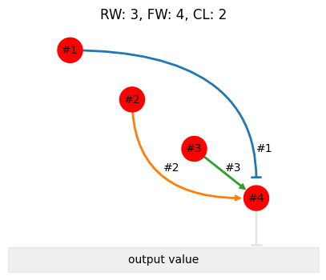
[19]:
datdot = pd.DataFrame({
"h": [2, 4, 6, 8],
"v": [9, 7, 5, 3],
"c": [".9", ".9", ".9", ".9"]
})
b_pos = {
12: (datdot.h[0:2].mean(), datdot.v[0:2].mean()),
13: (datdot.h[2], datdot.v[1]),
14: (datdot.h[3], datdot.v[2]),
23: (datdot.h[1:3].mean(), datdot.v[1:3].mean()),
24: (datdot.h[1:3].mean(), datdot.v[2:4].mean()),
34: (datdot.h[2:4].mean(), datdot.v[2:4].mean()),
}
a_aps = {
1: ap("C0"),
2: ap2(".9"),
3: ap("C0"),
4: ap2("C1")
}
b_aps = {
12: ap("C1"),
13: app(1, "C0"),
14: apn(1, ".9"),
23: ap2(".9"),
24: app(2, "C1"),
34: ap("C2"),
}
[20]:
fig, ax = plt.subplots(figsize=(5, 4))
ax.scatter(data=datdot, x="h", y="v", s=500, c="c")
ax.annotate("", [datdot.h[1 - 1], 1], [datdot.h[1 - 1], datdot.v[1 - 1]], arrowprops=a_aps[1], **arrconf)
# ax.annotate("", [datdot.h[2 - 1], 1], [datdot.h[2 - 1], datdot.v[2 - 1]], arrowprops=a_aps[2], **arrconf)
ax.annotate("", [datdot.h[3 - 1], 1], [datdot.h[3 - 1], datdot.v[3 - 1]], arrowprops=a_aps[3], **arrconf)
ax.annotate("", [datdot.h[4 - 1], 1], [datdot.h[4 - 1], datdot.v[4 - 1]], arrowprops=a_aps[4], **arrconf)
# ax.text(datdot.h[1 - 1], datdot.v[1 - 1], "0", ha="center", va="center", size=10)
# ax.text(datdot.h[2 - 1], datdot.v[2 - 1], "0", ha="center", va="center", size=10)
# ax.text(datdot.h[3 - 1], datdot.v[3 - 1], "0", ha="center", va="center", size=10)
# ax.text(datdot.h[4 - 1], datdot.v[4 - 1], "3", ha="center", va="center", size=10)
ax.text(datdot.h[1 - 1], 2, "positive\ncascade", ha="center", va="center", size=8)
# ax.text(datdot.h[2 - 1], 2, "0", ha="center", va="center", size=10)
ax.text(datdot.h[3 - 1], 2, "positive\ncascade", ha="center", va="center", size=8)
# ax.text(datdot.h[4 - 1], 2, "positive\ncascade", ha="center", va="center", size=8)
# ax.text(datdot.h[4 - 1] +.3, 2, "2", ha="center", va="center", size=10, c="C4")
ax.annotate("", *edge_pos[12], arrowprops=b_aps[12], **arrconf)
ax.annotate("", *edge_pos[13], arrowprops=b_aps[13], **arrconf)
ax.annotate("", *edge_pos[14], arrowprops=b_aps[14], **arrconf)
ax.annotate("", *edge_pos[23], arrowprops=b_aps[23], **arrconf)
ax.annotate("", *edge_pos[24], arrowprops=b_aps[24], **arrconf)
# ax.annotate("", *edge_pos[34], arrowprops=b_aps[34], **arrconf)
# ax.text(*b_pos[12], "0+1", ha="center", va="center", size=10)
# ax.text(*b_pos[13], "positive\ncascade", ha="center", va="center", size=8)
ax.text(*b_pos[14], "cascade", ha="center", va="center", size=8)
ax.text(*b_pos[23], "cascade", ha="center", va="center", size=8)
ax.text(*b_pos[24], "enhancing\ncascade", ha="center", va="center", size=8)
# ax.text(*b_pos[34], "0+1", ha="center", va="center", size=10)
ax.fill_between([0, 10], [0, 0], [1, 1], color=".7", alpha=.2)
ax.text(5, .5, "output value", ha="center", va="center")
ax.set_ylim([0, 10])
ax.set_xlim([0, 10])
ax.axis("off")
ax.set_title("cascade types")
fig.savefig(f"/home/jovyan/out/feat_cascade_types.pdf", **kwarg_savefig)
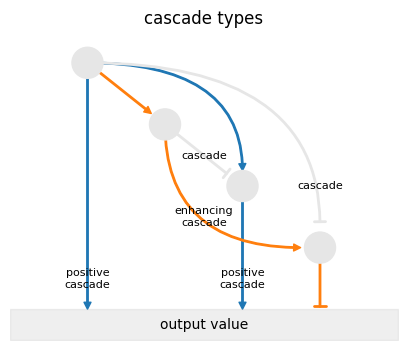
[21]:
from biodoe_tools.preferences import textcolor
[22]:
fig, ax = plt.subplots(figsize=(4, 2))
datdot = pd.DataFrame({
"name": ["Xi", "Xj"] * 3,
"h": [1, 5, 1, 5, 1, 5],
"v": [9, 9, 6, 6, 3, 3],
"c": [plt.cm.tab10(0), plt.cm.tab10(1)] * 3
})
ap = lambda n: dict(
shrink=0, width=1, headwidth=5,
headlength=5, connectionstyle="arc3",
facecolor=datdot.c[n - 1], edgecolor=datdot.c[n - 1]
)
ap2 = lambda n: dict(
arrowstyle="|-|", connectionstyle="arc3",
facecolor=datdot.c[n - 1], edgecolor=datdot.c[n - 1],
linewidth=2, mutation_scale=4,
)
arrconf=dict(ha="center", va="center", zorder=-10)
ax.scatter(data=datdot, x="h", y="v", s=500, color="c")
ax.annotate("", [4.5, 9], [1, 9], arrowprops=ap(1), **arrconf)
ax.annotate("", [4.5, 3], [1, 3], arrowprops=ap2(1), **arrconf)
for i, name in enumerate(datdot.name):
ax.text(
datdot.h[i], datdot.v[i], name,
ha="center", va="center", size="medium",
c=textcolor(datdot.c[i])
)
ax.set_ylim([2, 10])
ax.set_xlim([0, 6])
ax.axis("off")
ax.text(3, 8.5, r"$+1$", ha="center", va="center", size=10)
ax.text(3, 5.5, r"$0$", ha="center", va="center", size=10)
ax.text(3, 2.5, r"$-1$", ha="center", va="center", size=10)
ax.set_title("Variations of regulatory effects")
fig.savefig(f"/home/jovyan/out/prototype_models_edges.pdf", **kwarg_savefig)
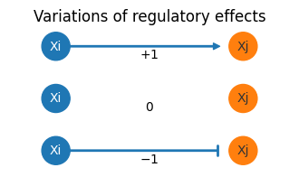
[23]:
fig = plt.figure(figsize=(4, 4), facecolor="w")
ax = fig.add_subplot(111, projection="3d")
a = 2
b = 3
c = 4
d = 6
width = depth = .3
center = depth / 2
ax.bar3d(0, 0, 0, width, depth, a, shade=True, alpha=.5, color=".7")
ax.bar3d(1, 0, 0, width, depth, b, shade=True, alpha=.5, color=plt.cm.gnuplot2(.7))
ax.bar3d(0, 1, 0, width, depth, c, shade=True, alpha=.5, color=plt.cm.gnuplot2(.3))
ax.bar3d(1, 1, 0, width, depth, d, shade=True, alpha=.5, color=plt.cm.gnuplot2(.5))
ax.plot([0 + center, 1 + center], [0 + center, 0 + center], [a, b], c="r", zorder=10)
ax.plot([0 + center, 1 + center], [0 + center, 0 + center], [a, a], c="r", zorder=10)
ax.plot([1 + center, 1 + center], [0 + center, 0 + center], [a, b], c="r", zorder=10)
ax.plot([0 + center, 1 + center], [1 + center, 1 + center], [c, d], c="r", zorder=10)
ax.plot([0 + center, 1 + center], [1 + center, 1 + center], [c, c], c="r", zorder=10)
ax.plot([1 + center, 1 + center], [1 + center, 1 + center], [c, d], c="r", zorder=10)
ax.plot([0 + center, 0 + center], [0 + center, 1 + center], [a, c], c="C0", zorder=10)
ax.plot([0 + center, 0 + center], [0 + center, 1 + center], [a, a], c="C0", zorder=10)
ax.plot([0 + center, 0 + center], [1 + center, 1 + center], [a, c], c="C0", zorder=10)
ax.plot([1 + center, 1 + center], [0 + center, 1 + center], [b, d], c="C0", zorder=10)
ax.plot([1 + center, 1 + center], [0 + center, 1 + center], [b, b], c="C0", zorder=10)
ax.plot([1 + center, 1 + center], [1 + center, 1 + center], [b, d], c="C0", zorder=10)
# ax.plot([1 + center, 0 + center], [0 + center, 1 + center], [b, c], c=".5", zorder=10)
ax.set_xticks([0 + center, 1 + center], ["$-$", "$+$"])
ax.set_yticks([0 + center, 1 + center], ["$-$", "$+$"])
ax.set_zticks([], [])
ax.set_xlabel("Factor A", labelpad=-1)
ax.set_ylabel("Factor B", labelpad=0)
ax.set_zlabel("objective variable", labelpad=-15)
ax.text(0 + center, 0 + center, 0, "$(-,-)$", zorder=100, ha="center", va="bottom")
ax.text(1 + center, 0 + center, 0, "$(+,-)$", zorder=100, ha="center", va="bottom")
ax.text(0 + center, 1 + center, 0, "$(-,+)$", zorder=100, ha="center", va="bottom")
ax.text(1 + center, 1 + center, 0, "$(+,+)$", zorder=100, ha="center", va="bottom")
plt.show()
fig.savefig(f"/home/jovyan/out/multicomp_vs_anova.pdf", **kwarg_savefig)
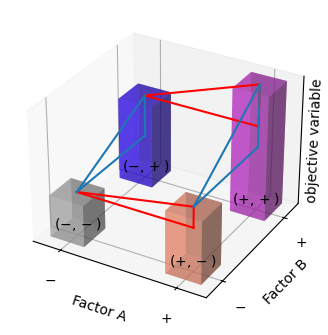
[24]:
from biodoe_tools.plot import generate_clusters
import scanpy as sc
import anndata as ad
[25]:
def get_deg(
data: ad.AnnData,
cluster_name: str,
pvals_adj: float = .05,
max_logfc: float = np.inf,
min_logfc: float = -np.inf
) -> np.ndarray:
loc = (
data.uns["rank_genes_groups"]["pvals_adj"][cluster_name] < pvals_adj
) & (
data.uns["rank_genes_groups"]["logfoldchanges"][cluster_name] < max_logfc
) & (
data.uns["rank_genes_groups"]["logfoldchanges"][cluster_name] > min_logfc
)
return data.uns["rank_genes_groups"]["names"][cluster_name][loc]
def top_degs(
data: ad.AnnData,
top: int = 5,
pvals_adj: float = .05,
max_logfc: float = np.inf,
min_logfc: float = -np.inf,
unique: bool = True
) -> np.ndarray:
arr = np.concatenate(
[
get_deg(
data=data,
cluster_name=name,
pvals_adj=pvals_adj,
max_logfc=max_logfc,
min_logfc=min_logfc
)[:top] for name in data.uns["rank_genes_groups"]["names"].dtype.names
],
axis=0
)
_, idx = np.unique(arr, return_index=True)
return arr[np.sort(idx)] if unique else arr
[26]:
from tqdm.notebook import tqdm
[28]:
np.random.seed(0)
seeds = np.random.randint(0, 2 ** 31 - 1, 5)
for i, seed in tqdm(enumerate(seeds), total=seeds.size, desc="generating toy data"):
np.random.seed(seed)
s = np.random.randint(0, 2 ** 32 - 1, 5)
np.random.seed(s[0])
n_cells = np.random.randint(2000, 8000)
np.random.seed(s[1])
n_clusters = np.random.randint(4, 10)
np.random.seed(s[2])
de_prob = np.random.uniform(0.01, 0.07)
np.random.seed(s[3])
dropout_mid = np.random.uniform(0.2, 0.5)
np.random.seed(s[4])
adata = generate_clusters(
n_genes=10000, n_cells=n_cells,
group_prob=np.abs(np.random.randn(n_clusters)),
de_prob=de_prob, dropout_mid=dropout_mid,
random_state=seed
)
sc.pp.normalize_total(adata, target_sum=1e5)
sc.pp.log1p(adata)
sc.pp.pca(adata)
sc.pp.neighbors(adata)
sc.tl.umap(adata)
sc.tl.leiden(adata, resolution=1, flavor="igraph", n_iterations=2)
fig, ax = plt.subplots(figsize=(3, 3))
ax = sc.pl.umap(
adata, color="leiden", frameon=False,
ax=ax,
size=10,
palette="gist_rainbow",
show=False
)
ax.get_legend().remove()
ax.set(title="")
for collection in ax.collections:
collection.set_rasterized(True)
fig.patch.set_facecolor('none')
ax.patch.set_facecolor('none')
fig.patch.set_alpha(0)
ax.patch.set_alpha(0)
fig.savefig(f"/home/jovyan/out/scrna-seq_scatter_{i}.pdf", **kwarg_save_transparent_fig)
sc.tl.rank_genes_groups(adata, "leiden", method='wilcoxon')
sc.pl.rank_genes_groups(adata, n_genes=25, sharey=False)
heatmap = sc.pl.heatmap(
adata, top_degs(adata, 10), groupby="leiden", swap_axes=True, cmap="RdYlBu_r",
show=False, figsize=(5, 5), rasterized=True
)
heatmap['groupby_ax'].set(xlabel="")
heatmap['heatmap_ax'].tick_params(left=False, labelleft=False)
fig = plt.gcf()
fig.patch.set_facecolor('none')
fig.patch.set_alpha(0)
plt.savefig(f"/home/jovyan/out/scrna-seq_heatmap_{i}.pdf", **kwarg_save_transparent_fig)
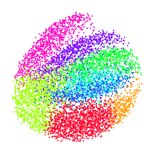
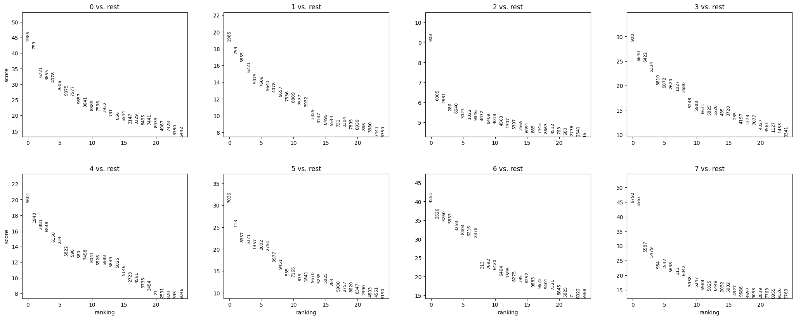
WARNING: Gene labels are not shown when more than 50 genes are visualized. To show gene labels set `show_gene_labels=True`
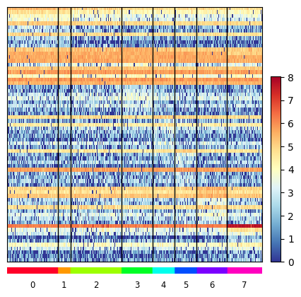
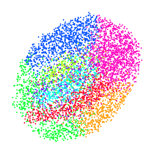
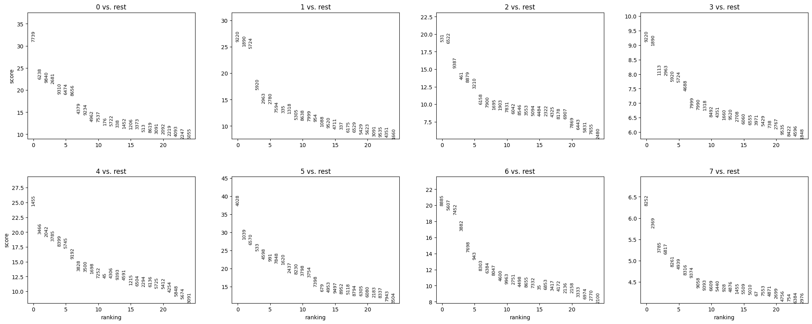
WARNING: Gene labels are not shown when more than 50 genes are visualized. To show gene labels set `show_gene_labels=True`
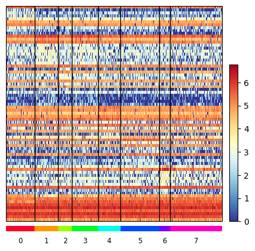
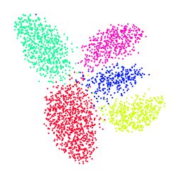
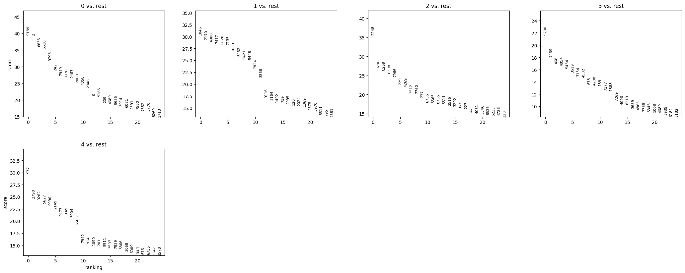
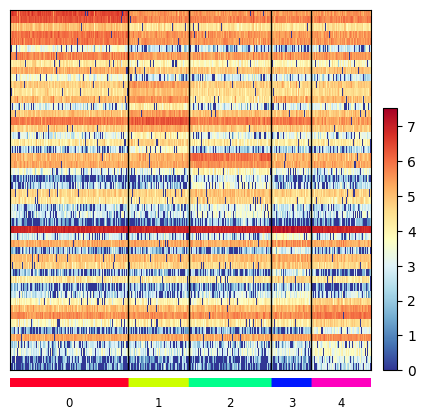
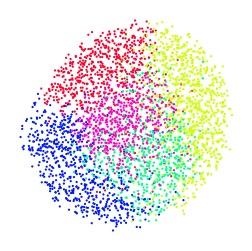
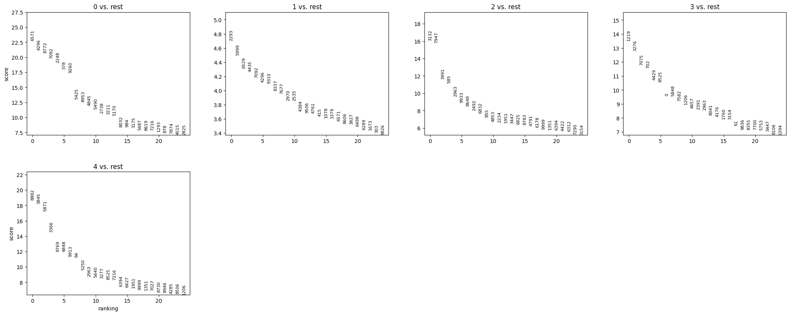
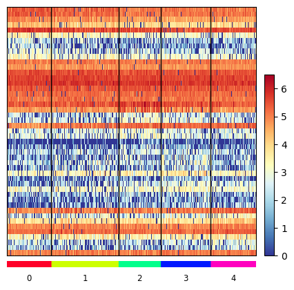
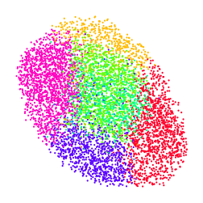
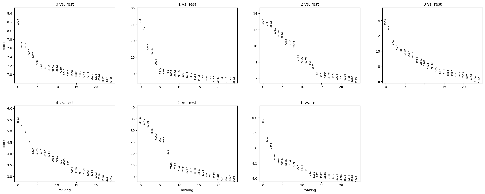
WARNING: Gene labels are not shown when more than 50 genes are visualized. To show gene labels set `show_gene_labels=True`

[ ]: